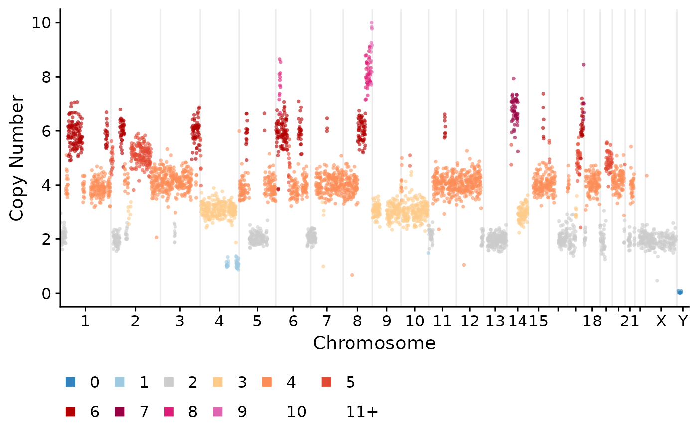

plotCNprofile.RdPlot a single cell copy number profile
plotCNprofile( CNbins, cellid = NULL, chrfilt = NULL, pointsize = 1, alphaval = 0.9, maxCN = 10, cellidx = 1, statecol = "state", returnlist = FALSE, raster = FALSE, y_axis_trans = "identity", xaxis_order = "genome_position", legend.position = "bottom", annotateregions = NULL, SV = NULL, svalpha = 0.5, svwidth = 1, adj = 0.03, genes = NULL, ... )
| CNbins | Single cell copy number dataframe with the following columns: |
|---|---|
| cellid | Which cell to plot, if no cell is specific will plot the first cell in the dataframe |
| chrfilt | Vector of chromosomes to plot, if NULL (default) will plot all chromosomes |
| pointsize | The point size in the plot |
| alphaval | Alpha value of points |
| maxCN | The maximum on the y axis, if any points are above this value they will be winsorized rather than removed |
| cellidx | idx of cell to plot if cellid = NULL |
| statecol | The colour mapping, default is to map colours to the |
| returnlist | Return a list rather than the ggplot object |
| raster | use ggrastr or not, default = FALSE |
| y_axis_trans | What transformation to use on the y-axis, default is identity, the other option is "squashy" which uses a tanh transformation |
| xaxis_order | Default is "genome_position" |
| legend.position | Where to place the legend, default is "bottom" |
| annotateregions | Dataframe with chr start and end positions to annotate, will draw a dashed vertical line at this position |
| SV | Default is NULL. If a dataframe with structural variant position is passed it will add rearrangement links between bins. |
| svalpha | the alpha scaling of the SV lines, default = 0.5 |
| genes | vector of genes to annotate, will add a dashed vertical line and label |
ggplot2 plot
plotCNprofile(CNbins)#>#>#>